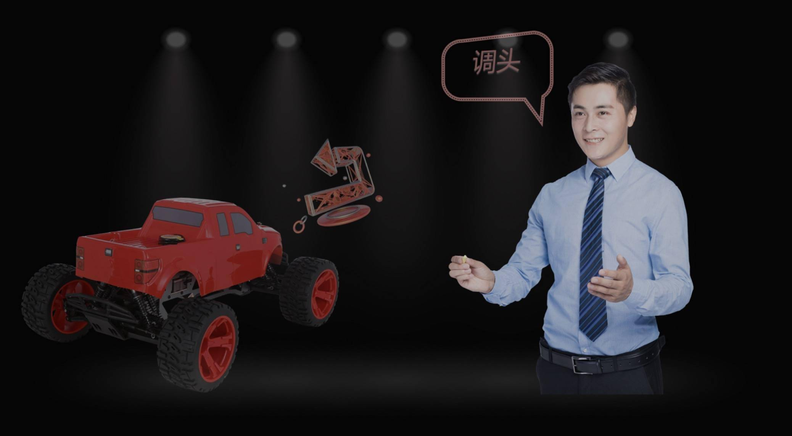

2020-10-29 15:21 DoNews
2020联想创新科技大会个人智能日如期召开，在昨天的晨星工业机器人之后，今天联想又带来了数个引爆眼球的产品和解决方案，其中联想未来教室成为最受关注的硬核方案之一，因为它集成了当下全球最前沿的科技，或许你在很多科幻电影中都没见过。
2018年《教育信息化2.0行动计划》的发布使教育信息化进入到融合创新阶段，在这个阶段新兴技术对教育行业的推动备受期待。联想未来教室着眼于未来教学理念的发展趋势，通过AR/VR、AI、边缘计算、5G等技术的融合创新构建体验升级的立体化教学场景，为教学沉浸感和学习个性化等体验升级提供理论指导和技术方案，探索新兴技术应用于教育环节的最佳实践，具体包括沉浸互动教学、远程拟真教学等系统。
沉浸互动教学将交互式全息应用于知识森林教学领域，以三维全息的方式呈现知识森林，用手势互动的方式探索知识森林，并提供知识路径导航和虚拟实验学习，激发学生探索知识的欲望，也满足教师对某些知识点的演示与讲解需求。远程拟真教学将全景显示、8K相机与全息投影应用于远程教学的两端，教师端能够看到全景效果的学生，学生端能够看到全息效果的教师，教学内容也会在学生端通过全息投影呈现出来，并可与教师叠加形成混合现实的效果，大大提升了远程教学的临场感与沉浸感。
联想集团高级副总裁、全球消费业务部和先进创新中心总经理贾朝晖介绍到，未来的智慧课堂，通过立体影像采集与重建技术、大幅面全息投影技术以及5G传输技术，大城市中进行教学的老师的形象便会以三维全息影像的形式、实时地传送到远在山区的教室，我们把它称为“数字孪生教师”；“数字孪生教师”为那里的孩子们上课，从而让山区的孩子们也能接受到大城市的孩子们才可获得的优质教育。
借助自然体感交互技术，数字孪生教师可以实时操作八大行星的三维模型，讲解太阳系相关的科学知识。山区的教室里，运用空间定位技术，同学们可以和数字孪生教师、行星模型实时互动，这大大提升了枯燥的天文学学习的趣味性。
因故不能到校的同学，在家中利用混合现实眼镜和体感设备，就可以加入到部署了超高清直播系统的沉浸式远程互动教室；在家里，也可以像坐在教室里的其他孩子们一样，与数字孪生教师互动，在空中操作行星模型。
